Upload Files
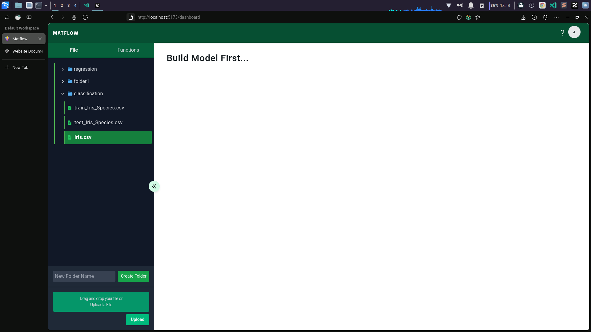
This feature allows users to upload CSV or Excel files. Select a folder to organize your data files or upload directly to the root directory. Once a file is uploaded, you can use it for further analysis functions.
Display Dataset
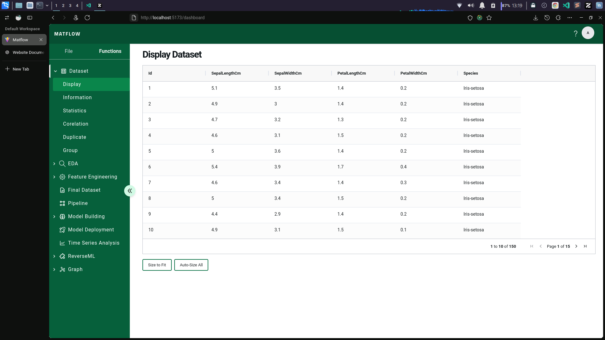
The Display option shows the content of the selected dataset, providing a preview of the data to ensure correct formatting and structure.
Dataset Information
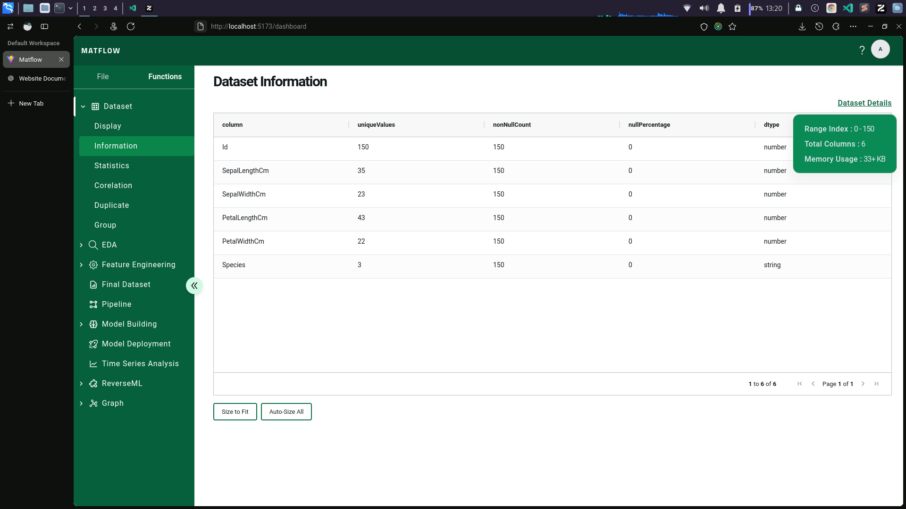
This feature displays metadata about the dataset, such as unique values, non-null counts, null percentages, and data types for each column. It also provides memory usage details.
Dataset Statistics
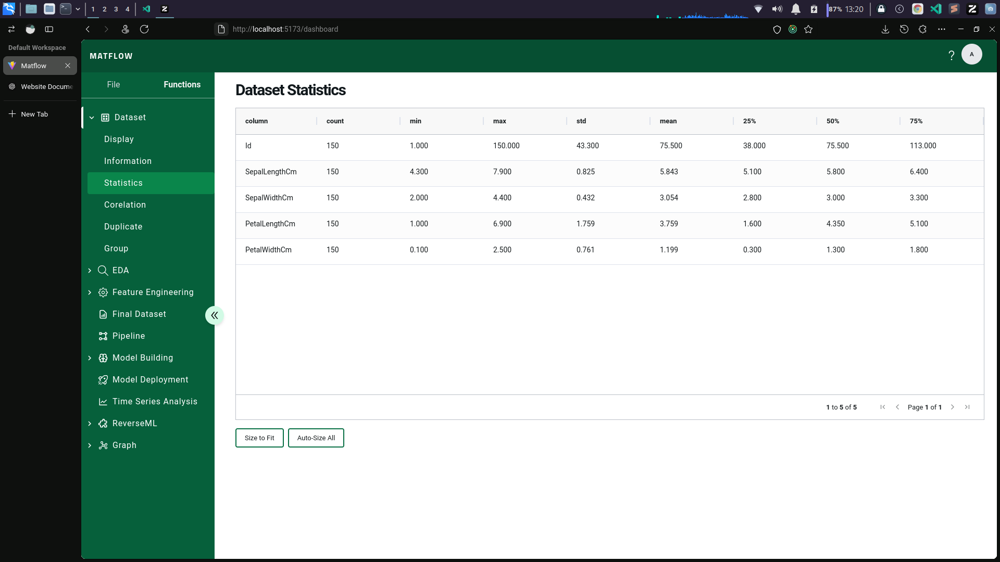
View summary statistics for each column, including count, mean, standard deviation, min, max, and percentiles. This helps in understanding the distribution and scale of your data.
Feature Correlation
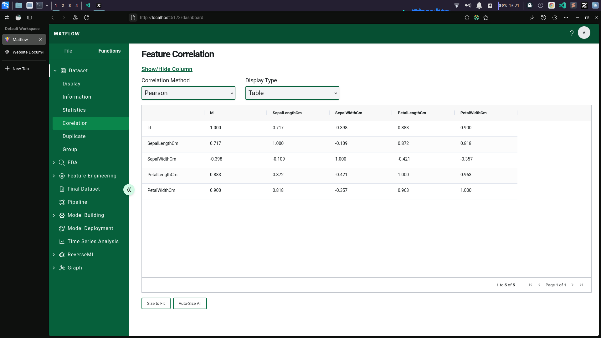
The Correlation feature calculates correlation coefficients between columns using methods like Pearson and Spearman. Visualize results as a table or heatmap.
Duplicate Check
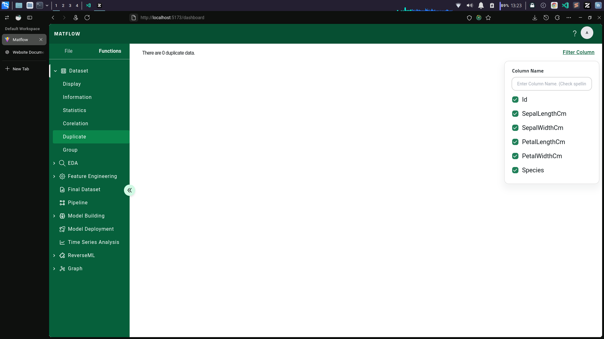
Identify duplicate rows in the dataset. Filter by column to detect duplicates in specific attributes, ensuring data integrity.
Group Data
Group data based on selected columns and apply aggregate functions (e.g., count, mean) to analyze grouped data meaningfully.
Exploratory Data Analysis (EDA)
Bar Plot
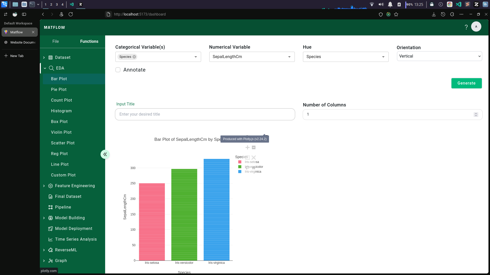
Visualize categorical data by plotting bar heights based on a numerical variable. Customize by adding a hue or changing orientation.
Pie Plot
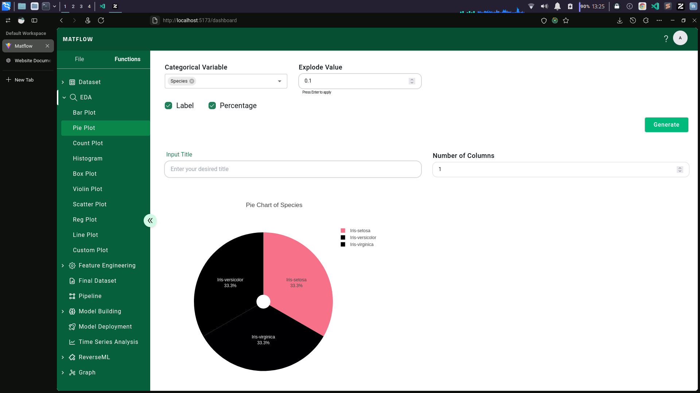
Create a pie chart for a categorical variable. Use labels, percentages, or explode a specific slice for emphasis.
Histogram
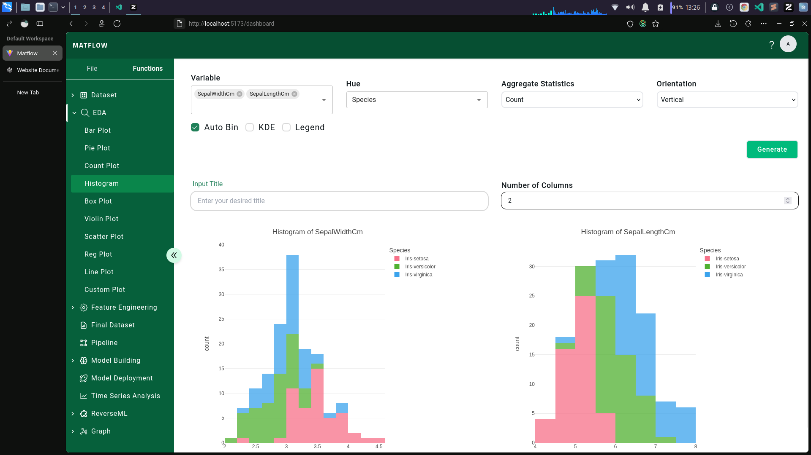
View the distribution of numerical data. Enable KDE overlay or customize bins and orientation.
Scatter Plot
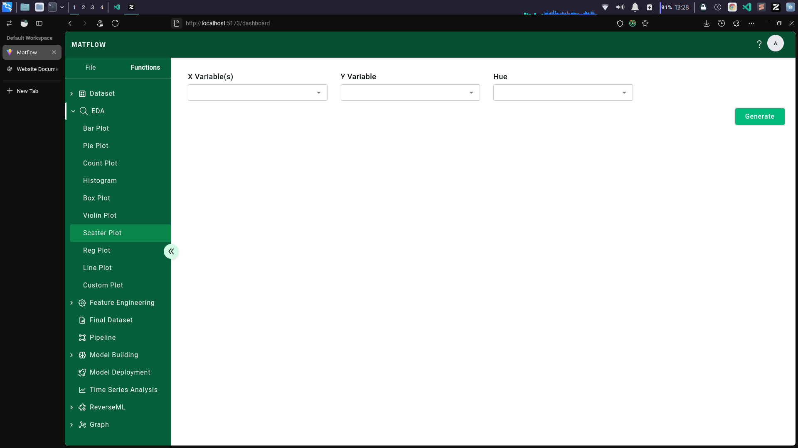
Visualize relationships between numerical variables. Add hue to represent categories.
Feature Engineering
Add/Modify
This section allows users to create, modify, or add new features to the dataset. The following options and methods are available:
1. Add New Column
Create a new column in the dataset and populate it using one of the following methods:
-
New Column: Add a completely new column with a
static value or other predefined data.
Example: Create a column namedStatusand populate it with the valueActive. -
Math Operation: Derive a new column using
mathematical expressions involving one or more existing columns.
Example: Create a columnAreausing the formulaLength * Width. -
Extract Text: Extract specific patterns from
text-based columns using regular expressions (regex).
Example: Extract uppercase abbreviations using the regex pattern[A-Z]{2,}. -
Group Numerical: Bin a numerical column into
ranges or groups.
Example: Divide the columnAgeinto ranges like0-20,21-40, and41-60. -
Group Categorical: Combine multiple categorical
values into a single group.
Example: Combine values likeSmall,Medium, andLargeinto a group calledSize.
2. Save as New Dataset
Save the modified dataset as a new file without overwriting the original dataset.
- New Dataset Name: Specify the name for the new dataset that includes the modified features.
Modify Option
Modify existing columns or data within the dataset using the following methods:
-
Progress Apply: Apply advanced computations to
your dataset with specific functions.
- Compute All Features Using RDKit: Calculate molecular features using RDKit.
- Chem.inchi.toLenchikey: Convert InChI chemical structures to their hashed InChIKey representations.
-
Replace Value: Replace specific values in a
column with a new value.
Example: Replace all occurrences ofNULLin theStatuscolumn withUnknown.
3. Add to Pipeline
Add transformations to a pipeline for reproducibility. This is especially useful for consistent preprocessing across multiple datasets.
- Show Sample: Preview a small sample of the modified dataset with the applied operations.
Screenshots
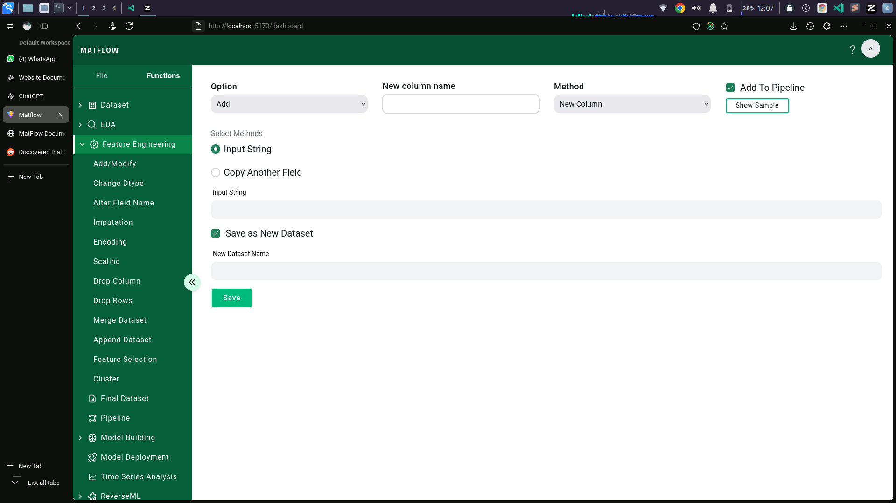
Add New Column - New Column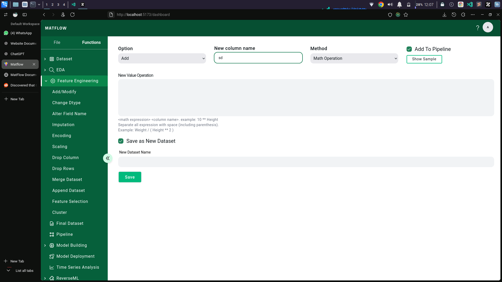
Add New Column - Math Operation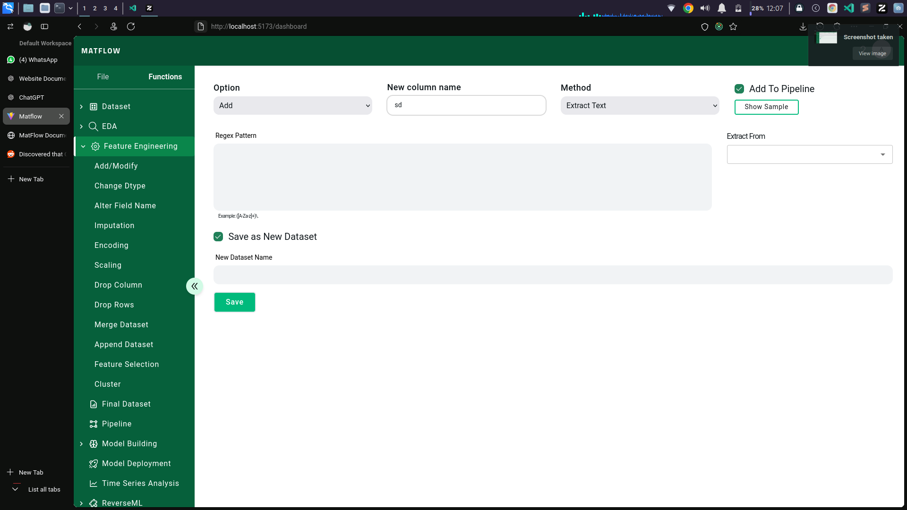
Add New Column - Extract Text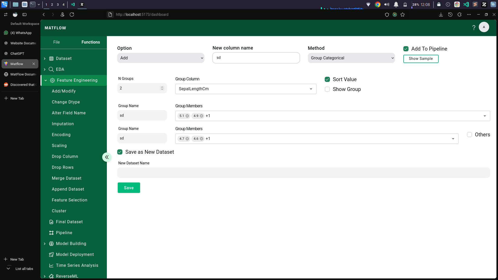
Add New Column - Group NumericalChange Dtype
The Change Dtype feature allows users to change the data type of one or more columns in the dataset. This is particularly useful for optimizing memory usage or ensuring compatibility with specific algorithms and computations.
Example
Suppose you have columns SepalLengthCm and
PetalWidthCm stored as 64-bit floating-point numbers.
You can change their types to 32-bit integers for memory
efficiency while ensuring compatibility with downstream tasks.
Screenshots
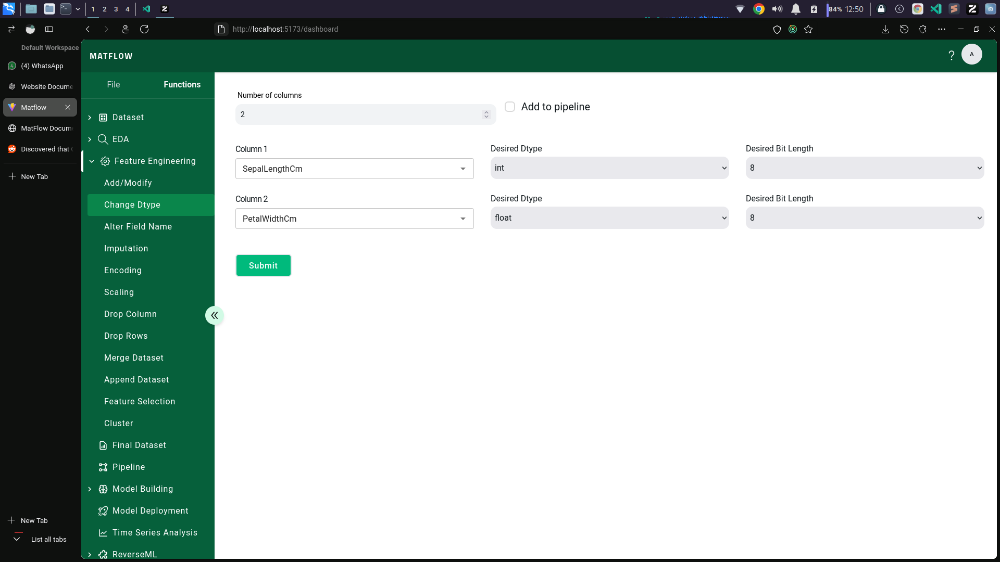
Change Dtype Interface